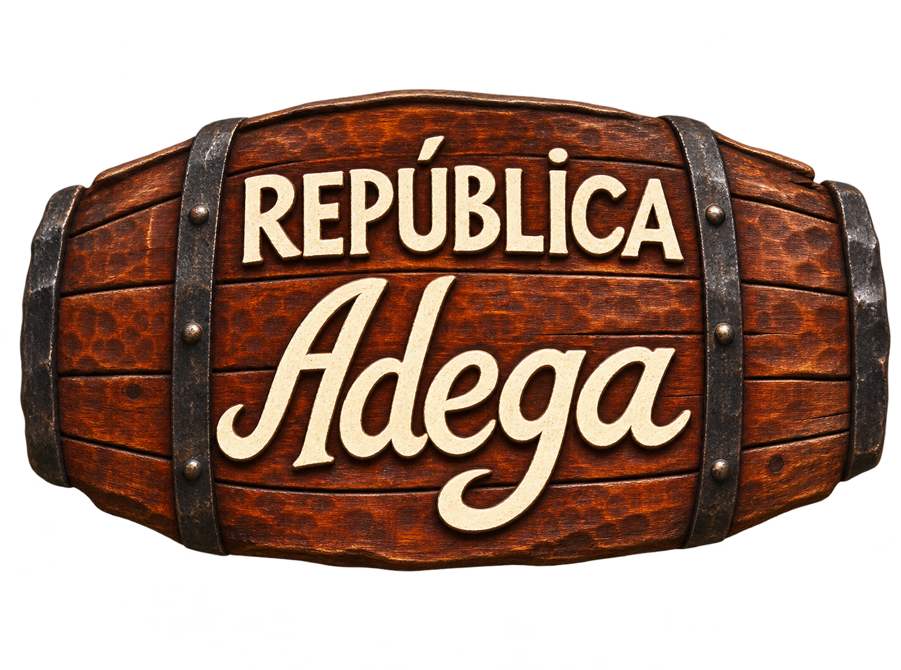

CADASTRO EM PREPARAÇÃO
Conheça os moradores
Fotografias e perfis serão adicionados pelos responsáveis da República.
A casa continua sua história com estudantes que compartilham experiências, responsabilidades e a vida universitária em Ouro Preto.
A galeria será preenchida com os nomes, cursos, apelidos e fotos dos moradores atuais, após autorização para publicação.

Fotografias e perfis serão adicionados pelos responsáveis da República.
A Adega oferece oportunidades de moradia para calouros de todos os cursos da UFOP. Para informações sobre vagas e o processo de ingresso, consulte os moradores.